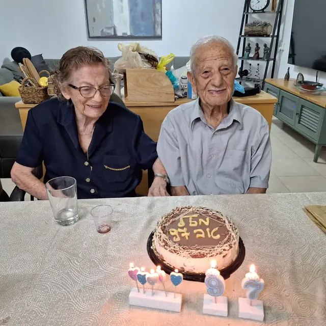

שורשים
מברזיל אל ישראל
בשנת 1952 עלו סוניה ואמיר ארצה בגרעין השלישי לברור חיל. עוד לפני ההגעה לקיבוץ עברו יחד פרק של הכשרה בתל יוסף.
סוניה פלוט ז״ל: 12.6.1933–27.5.2025 · אמיר פלוט ז״ל: 7.7.1926–1.4.2025
זיכרון עדין
מרחב זיכרון שקט, מאוורר ובהיר — מקום לקרוא, לנשום, להיזכר ולהתבונן בתמונות בכבוד ובעדינות.

שורשים
בשנת 1952 עלו סוניה ואמיר ארצה בגרעין השלישי לברור חיל. עוד לפני ההגעה לקיבוץ עברו יחד פרק של הכשרה בתל יוסף.
שם שנשאר כסיפור
סוניה נולדה בבאטאטאיס שבברזיל. רישום ההגירה בארץ הפך את שם המקום ל״בית הטייס״ — טעות שהפכה לזיכרון משפחתי חם.
בית
ההגעה לברור חיל הייתה רגע מכונן. אמיר, שהיה מזכיר התנועה בברזיל, זכר את קבלת הפנים החמה ואת תחושת השייכות שנולדה שם.
זיכרון
משפחה, קהילה, דרך משותפת ונתינה שקטה — אלו הקווים שממשיכים לחבר בין התמונות, הסיפורים והאנשים.
צילום וזיכרון





תחנות שקטות
בעיירה באטאטאיס, צפונית לסאו פאולו.
ולימים פועל בתנועה בברזיל.
הגרעין השלישי לברור חיל.
תחנת מעבר לקראת הבית החדש.
המקום שבו השתרשו החיים המשותפים.